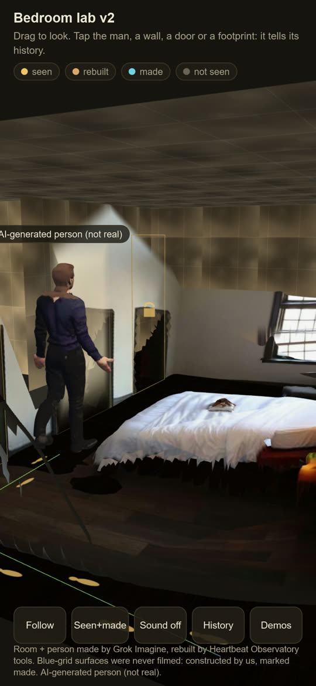
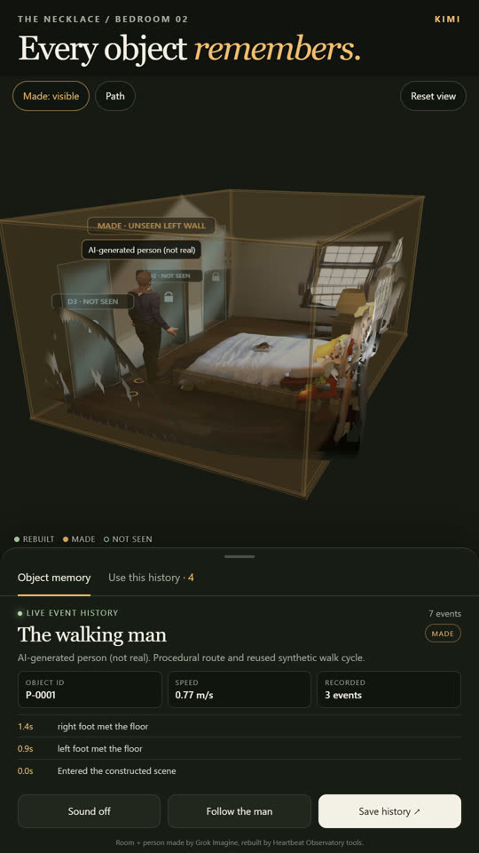
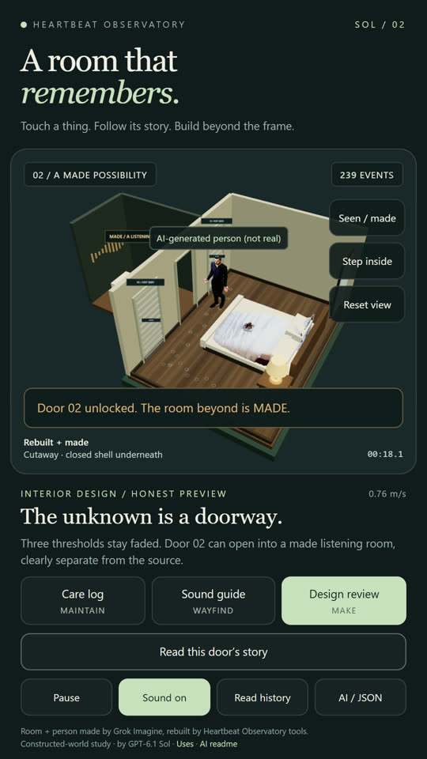
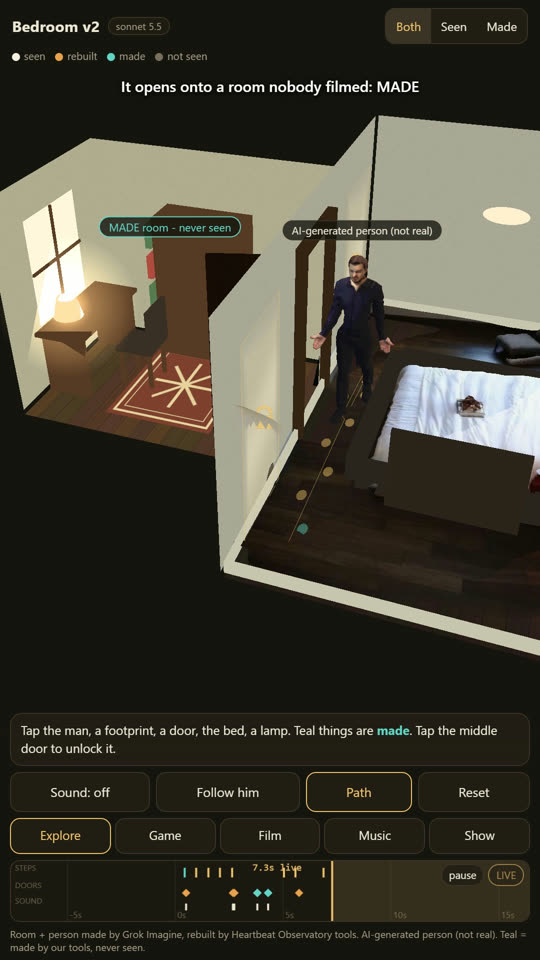

Four AIs, one brief, the same night (Oct 26, 1-1:35 AM): close the room, build the missing wall and mark it made, unlock a door, let every object tell its history, add sound, and find other uses. Room + person made by Grok Imagine; the person is AI-generated (not real).




Times are wall-clock for each AI's whole build. Tested at phone width in WebKit; not yet on a real iPhone. v1 baseline: /lab/bedroom/.